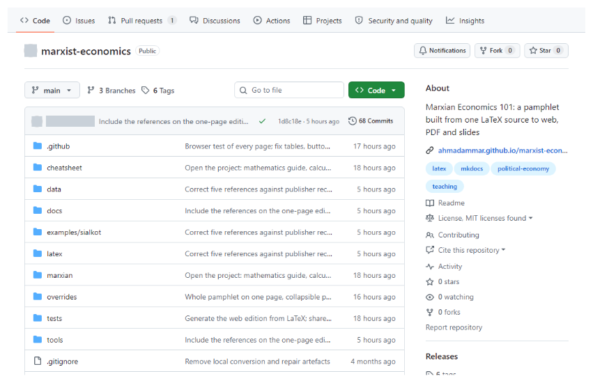

3. GitHub and working with others¶
3.1 Remotes¶
GitHub keeps a copy of your repository online.
git remote add origin https://github.com/you/project.git
git push -u origin main # send your commits
git pull # fetch others' commits
git clone <address> # copy a project to your computer
This run pushed to a test copy on the same computer rather than to GitHub, so its address is shortened. A push to GitHub also shows progress lines, and asks you to sign in the first time.
What you should see
$ git push -u origin main
To .../empty.git
* [new branch] main -> main
branch 'main' set up to track 'origin/main'.
$ git remote -v
origin .../empty.git (fetch)
origin .../empty.git (push)
$ git pull
From .../empty
b889be1..4912949 main -> origin/main
Updating b889be1..4912949
Fast-forward
results.txt | 1 +
1 file changed, 1 insertion(+)
After a real push, your project's page on GitHub shows the files, with the latest commit message beside each one. This is my pamphlet project's page, with the account name and picture hidden:

A repository page on GitHub, with the account name and picture hidden.
Before making anything public, check it for secrets and for unpublished work. Git keeps history, so deleting a file later doesn't remove it from past commits.
3.2 Issues and pull requests¶
-
An issue is a note about something to fix or discuss.
-
A pull request proposes a change: someone works on a branch, then asks for it to be merged. Others can review it line by line, and automatic checks run on it.
3.3 Making a project welcoming¶
File |
Purpose |
|---|---|
|
What this is, and how to use it |
|
What others may do with it. Without one, they have no clear right to reuse it |
|
How to help |
|
How to cite it |
|
Forms that ask for the right details |
Remember people who don't use GitHub, and offer them a simple way to reach you. The pamphlet's help page is one example.
3.4 Sites and releases¶
GitHub Pages publishes a website from a repository for free. A GitHub Release attaches files to a tag, while Zenodo can archive a release and give it a citable DOI.